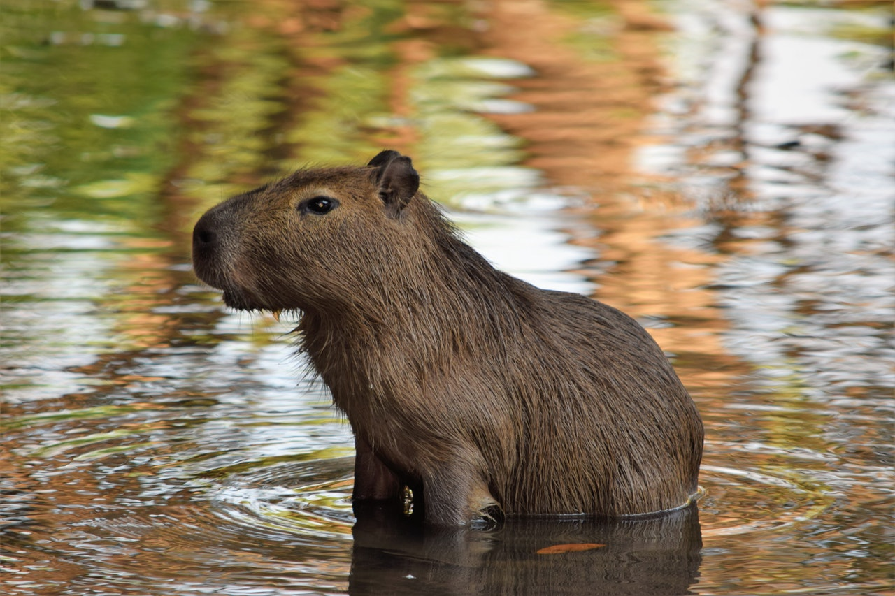

Základní informace

Kapybara je největší žijící druh hlodavce na světě. Je původem z Jižní Ameriky a žije ve skupinách u vodních toků. Má dlouhé nohy a prsty spojené plovacími blánami, které jí umožňují plavat a potápět se. Její srst je hnědá až rezavá a má hustou podsadu. Kapybara se živí převážně trávou a vodními rostlinami, fruit and tree bark¹³. Je to společenské zvíře, které si dobře rozumí s ostatními druhy¹³. Kapybara má neustále rostoucí zuby, které brousí žvýkáním tvrdé potravy². Kapybara může spát ve vodě s nosem nad hladinou². Kapybara je příbuzná morčatům a skálovým kavím²³. Kapybara může být napadena jaguárem, pumou nebo anakondou³. Průměrná délka života kapybary je 7 let v divočině a 12 let v zajetí³.
Výskyt v zemí
V Českých zoo
| Město | Zoo | Počet a pohlaví kapybar |
|---|---|---|
| Zlín | ZOO ZLÍN | 1 samec a 3 samice |
| Plzeň | Zoo Plzeň | 2 samci a 2 samice |
| Brno | Zoo Brno | 1 samec a 4 samice |
| Jihlava | Zoo Jihlava | 2 samci a 4 samice |